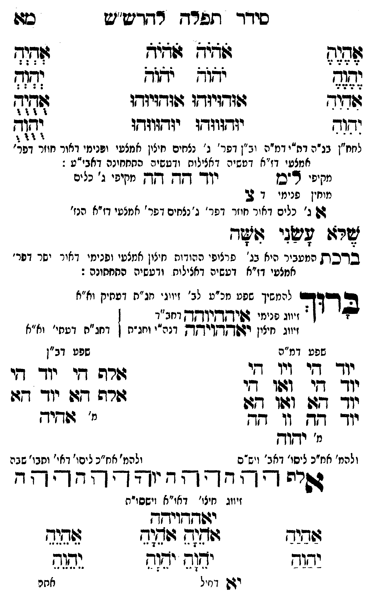

Neue Klartextfassung
=== טבלה === [טור ימין] אֶהֶיֶהֶ יֶהֶוֶהֶ אִהִיִהִ יִהִוִהִ [טור אמצעי] אֹהֹיֹהֹ אֹהֹיֹהֹ יֹהֹוֹהֹ יֹהֹוֹהֹ אוּהוּיוּהוּ אוּהוּיוּהוּ יוּהוּווּהוּ יוּהוּווּהוּ [טור שמאל] אְהְיְהְ יְהְוְהְ אֻהֻיֻהֻ יֻהֻוֻהֻ === סוף טבלה === [לחח"ן בג"ה דת"י דמ"ה וב"ן דפר' ג' נצחים חיצון אמצעי ופנימי דאור ישר דפר' אמצעי דז"א דעשיה דכללות ורביעיה התחתונה דאבי"ע:] [מקיפי ל"ם] יוד הה הה [מקיפי ג' כלים] [מוחין פנימי דצ'] צ א ג' [ג' כלים דאור חוזר דפר' ג' נצחים דפר' אמצעי דז"א הנז'] שלא עשני אשה: ■ ברכת המעביר ■ [היא בג' פרצופי ההודות חיצון אמצעי ופנימי דאור ישר דפר' אמצעי דז"א דעשיה דכללות ורביעיה התחתונה:] ברוך [להמשיך שפע מכ"ע לב' זיווגי חג"ת דעתיק וא"א] [זיווג פנימי איההיוהה דחב"ד] [זיווג חיצון יאההויהה דכ"ח ותו"ח] [דחג"ת דעתי' וא"א] === טבלה === [טור ימין — שפע דמ"ה] יוד הי ויו הי יוד הי ואו הי יוד הא ואו הא יוד הה וו הה [מ' יהוה] [ולכת' חב"ד ליסוד דאבא ויש"ס] [טור שמאל — שפע דב"ן] אלף הי יוד הי אלף הא יוד הא [מ' אהיה] [ולכת' חב"ד ליסוד דאי' ותבו' שבה] === סוף טבלה === אלף ה הה ו וה יה יהוה הההה [זיווג חיצון דאו"א וישסו"ת] יאההויהה === טבלה === [טור ימין] אַהַיַהַ יַהַוַהַ [טור אמצעי] אָהָיָהָ אָהָיָהָ יָהָוָהָ יָהָוָהָ [טור שמאל] אֵהֵיֵהֵ יֵהֵוֵהֵ === סוף טבלה ===
Original gegen neue OCR · Niqqud für Vergleich ausgeblendet
Original
=== טבלה === [טור ימין] אהיה יהוה אהיה יהוה [טור אמצעי] אהיה אהיה יהוה יהוה אוהויוהו אוהויוהו יוהוווהו יוהוווהו [טור שמאל] אהיה יהוה אהיה יהוה === סוף טבלה === [לחח"ןK086-001 בג"ה דת"י דמ"ה וב"ן דפר' ג' נצחים ∅K086-002 חיצון אמצעי ופנימי דאורK086-003 ישר דפר' אמצעיK086-004 דז"א דעשיה דכללות ורביעיה התחתונה דאבי"ע:] [מקיפי ל"ם] יוד הה הה [מקיפי ג' כלים] [מוחיןK086-005 פנימי דצ'] צ א ג' [ג' כלים דאור חוזר דפר' ג' נצחים דפר' אמצעי דז"א הנז'] שלא עשני אשה: ■ ברכת המעביר ■ [היא בג' פרצופי ההודות חיצון אמצעי ופנימי דאור ישר דפר' אמצעי דז"א דעשיה דכללות ורביעיה התחתונה:] ברוך [להמשיךK086-006 שפע מכ"ע לב' זיווגי חג"ת דעתיק וא"א] [זיווג פנימי איההיוהה דחב"ד] [זיווג חיצון יאההויהה דכ"ח ותו"ח] [דחג"ת דעתי' וא"א] === טבלה === [טור ימין —K086-007 שפע דמ"ה] יוד הי ויו הי יוד הי ואו הי יוד הא ואו הא יוד הה וו הה [מ' יהוה] [ולכת' חב"ד ליסוד דאבא ויש"ס] [טור שמאל — שפע דב"ן] אלף הי יוד הי אלף הא יוד הא [מ' אהיה] [ולכת' חב"ד ליסודK086-008 דאי' ותבו' שבה] === סוף טבלה === אלף ה הה ו וה יה יהוה הההה [זיווג חיצוןK086-009 דאו"א וישסו"ת] יאההויהה === טבלה === [טור ימין] אהיה יהוה [טור אמצעי] אהיה אהיה יהוה יהוה [טור שמאל] אהיה יהוה === סוף טבלה ===K086-010
OCR · fehlbar
סידד תפרד רודישיש כו: שד(: שש"ח שדיא ג(- צהצד זזו הזך גחזנ הדיח דוודגיגדץו זוגדגיודז לוףזד דוד יזדזוודג יזדווודו וד לז"ןK086-001 בג"ה דת"י דמ"ה וב"ן דפר' ג' נצחים חיצין אמצטי ופנימי דאור חוזר דפ' אמצטי דז"א דטשיה דאצילות ודטשיה התחחונה דאבי"ע : יחזיון דכן יו מבצד יי"נ נ) )זנ מוחין פנימי ד 2 22 ג' כלים דאיר חיזר דפר' ג' נצחים דפר ' אמצעי דז"א הנז' זי דשני זייגד בדכ[ק] המעביר היא בג' פרציפי ההודוחK086-002 חיצון אמצעי ופנימי דאירK086-003 ישר דפר' אמצטיK086-004 דז"א דעשיה דאצילוח ודעשיה החחחונה : ד' רידבם להמשיך שפט מכ"ט לב' זיויג' חנ"ה ועחיק וא"א שדוד.K086-005 פנימי זפיקדקי"ךקךק דחב"ד ויווג זיזין רהשךקךץוידזדן דנה"י וחג"ת ן דחג"ח דטחי' וא"אK086-006 שפע דמ"הK086-007 שפע דב"ן יוךך דזר דיו -זי רה די יוך- י ללשלצ]זזיאלל זנ: זז (3 (ג: נג 32 ו6ו גף - יוך דא (ו' דז- ' 9(דזיך מ' יחון ולהמ' אח"כ ליסו' דאב' ויש"ס ולהמ' אח"ס ליסו'K086-008 דאי' וחבו' שבה ודד1 -- -- ח יר' ' -"ץ - 4 ' זיווג חיצו'K086-009 דאו"א וישסו"ת יזפזדזויחך גגבזיח ווזזש מ(ש שנג ישוד יתב י(9 גג(ש זק דחיל אחרK086-010